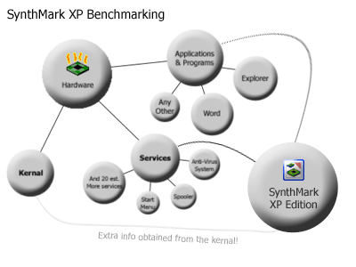

|
Benchmarking with
SynthMark XP See Also: The History of Benchmarking,
Back to Main. In this chapter we tell you how SynthMark XP is better than
other benchmarking systems. How SynthMark XP acts just like a computer game
or any other processing intensive application you may want to run with your
Computer. If you have not already, we suggest you read the previous
section called The History of Benchmarking Other Factors Influencing Performance: As we mentioned in the previous chapter, your computers
performance is not directly relative to your computers megahertz, besides the
processing techniques and operating system kernel, the performance of RAM,
hard drives, graphics adapters, network cards, modems and sound cards all
have a huge influence on the performance of certain programs. For example a
movie will run very slowly if you have an older and slower graphics card, or
SynthMark XP with 256 people in your server will run slowly because of a slow
modem? The list of examples are limitless,
and all of them have nothing to do with your processors megahertz. It is
because of this that we made SynthMark XP with so many different benchmarking
types, to test every aspect of your computers performance and always keep
them interesting, competitive and fun. How SynthMark XP uses your Operating System: In the previous chapter we showed you how a normal
multi-tasking environment works, and how a general benchmarking system works
by overriding the services and applications management systems and testing
the speed of your hardware. SynthMark XP balances perfectly with your operating system
kernel, applications and other services running on your computer to determine
exactly what performance your applications actually receive from your
computer, even though each benchmark is different, and the modes change
things a little to, the bottom line is SynthMark XP represents the true
performance of your computer, from and applications point of view. Some of the benchmarks are even worked through your operating
systems kernel such as the Multi-tasking and Thread Distribution benchmarks, which adds and even
more all-rounded performance benchmarking aspect to SynthMark XP.  Conclusion: With all these unique benchmarking techniques, and their own
relative measurements as described in the Actually
Benchmarking section, combined with two different benchmarking modes, and
the ability to do all this online versus up to 256 computers, we think
SynthMark XP is one of the most fun and interesting benchmarking systems ever
created. |